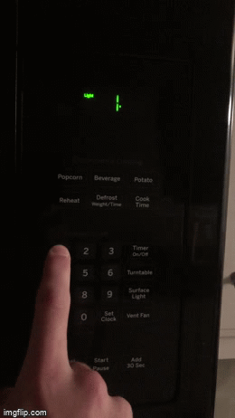
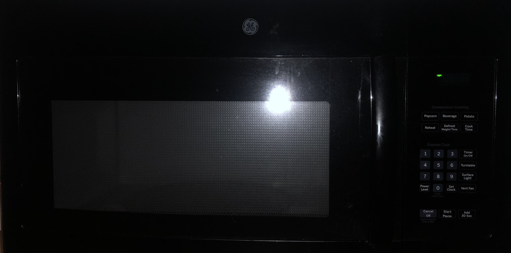
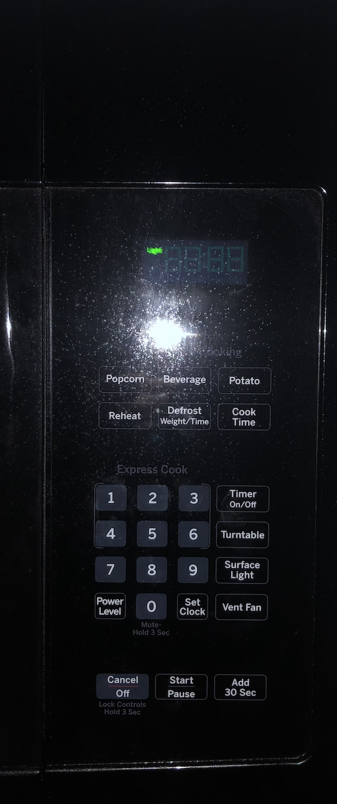

  
a). Whenever you click a number it procedes to cook for that many minutes, however, when you click another number, it doesnt add that many minutes. It doesnt do anthing at all.
b). There are alot of buttons like, reheat, defrost, etc. that could potentially be useful but remain unused because they are uneeded. For example, why do I need a
reheat button on a microwave? Isn't the purpose of a microwave to reheat food? Just put the food in for a minute. I think the interface should be very simple with
only efficeint buttons to heat up the food. The more buttons the more crowded the interface seems.
c). Another issue with this interface is if you click 1, the microwave will start heating up for 1 minute. If yiou click 2, however, the microwave will not add 2
more minutes it will keep the 1.
a). The most common use I have is heating up food by just clicking a number for the amount of minutes I want to cook.
b). Another common use is the "Add 30" seconds number that either starts the microwave for 30 seconds or adds 30 seconds to the current cooke time.
a). A more uncommomn use is the "popcorn" button on the interface. I click it whenever I have popcorn but most of the time it only cooks half the bag and leaves the rest kernels. This means I have to add more time anyways.
b). I also use the "defrost" button whenever I need to defrost food. Once again, I typically end up needing to run the frozen food through one or two defrost cycles before it actually thaws out.
The current interface does help with some common uses with functions like add 30 seconds and whenever you click a number it starts for that amount of minutes. These features can be helpful in that it lets you avoid clicking the start button or messing with a specific amount of seconds. Its just one button and your food starts heating up.
A common sequence of actions is typically putting food in the microwave and clicking the number for how many minutes you want the food to cook. If I want my food to cook a little longer than what I initially put it in for another common thing that I do is click the add 30 seconds button.
The current interface on the microwave supports the user by having key words indicating what that button might do. It also supports the user by only having a handle to open and close the door. This way it is very clear that the only way to open the door is to pull the handle and obviously the only way to close it is to push it closed. On the downside, many of the buttons such as the "popcorn," "defrost," "reheat," etc. are not very helpful because, from personal experience, they do not achieve their intended purpose; they typically over or under heat the food. However, despite its flaws, it is fairly simple to figure out how the microwave works by trial and error. For example, you can click the defrost button and on the tiny screen it will display how long its going to heat up the food and at what power level its running on. For feedback, everytime you click a button on the microwave it will beep. It will also give a unique beep when its doen cooking.
A common mistake I have seen from guests using the microwave is clicking a number thinking they will have to press the amount of seconds they want to heat the food up. They will end up cliking their first number but the microwave will start for that many minutes. Another common mistake I have made was clicking clock time thinking it was the button to push to heat something up for a specific amount of seconds. Unfortunatley that only sets a timer, set time is the button that will heat food up for a number of seconds. This made me ask, why does a microwave have a timer?